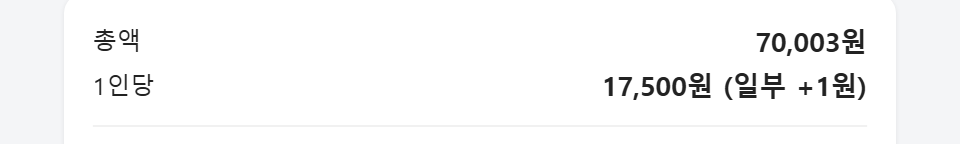
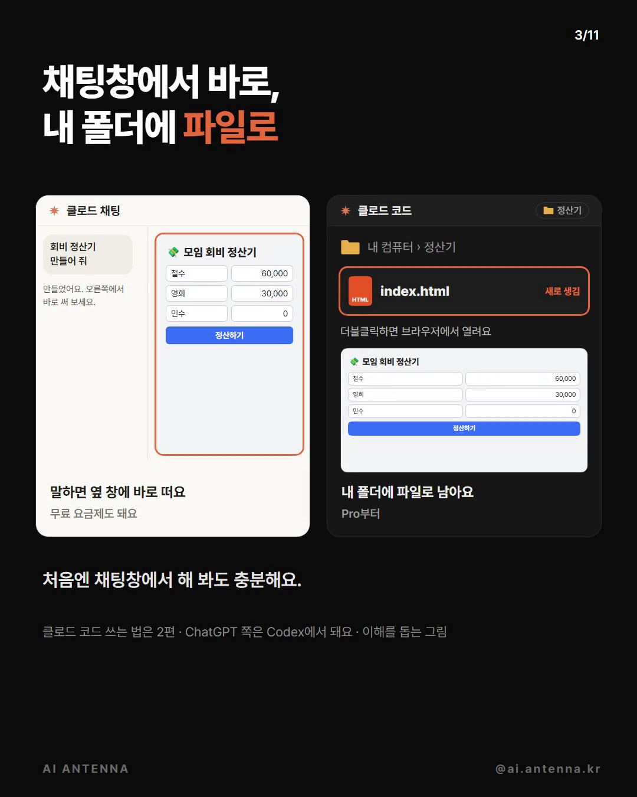

바이브코딩은 코드를 직접 짜는 대신 만들고 싶은 걸 말로 설명해서 AI가 만들게 하는 방식이에요. 첫 말 → 화면 보고 고치기 → 이상하면 그대로 말하기, 이 세 단계면 돼요. 아래 '처음 만들어 볼 것'은 연습용 폴더에서 클로드 코드에 문장 그대로 시켜 본 것이고, '받는 것'은 그때 실제로 나온 결과예요.
무엇을 만들지 + 내가 넣는 것 + 받고 싶은 것을 한 번에 말하세요. 예: '모임 회비 정산기 만들어 줘. 이름이랑 낸 돈을 넣으면 누가 누구한테 얼마 보내면 되는지 보여 줘'. 채팅에선 옆 창에, 클로드 코드에선 폴더에 index.html로 생겨요.
코드는 안 봐도 돼요. 써 보고 마음에 안 드는 곳을 보이는 대로 말하세요. 예: '글씨 더 크게, 결과를 카톡에 붙여 넣게 복사 버튼도 넣어 줘'. 한 번에 한두 가지씩 말하면 덜 꼬여요.
써 보다 이상한 점이 보이면 본 그대로 말하세요. 오류 문구가 뜨면 복사해서 그대로 붙여 넣으면 돼요. 예: "'3만'이라고 쓰니까 3원으로 계산돼" → 만·천 단위를 읽게 고쳐 줬어요.

클로드 코드로 만들었으면 폴더의 index.html을 더블클릭하면 브라우저에서 열려요. 채팅에서 만들었으면 옆 창에서 바로 쓰면 돼요. 공유 버튼으로 링크를 만들 수도 있는데, 받는 사람이 클로드에 로그인해야 열리는 경우가 있어요(support.claude.com '공유' 도움말).

받는 것: 이름·낸 돈 칸, 정산하기 → 총액·1인당·송금 목록(예: 민수 → 철수 25,000원). 금액 칸에 천 단위 쉼표가 자동으로 붙어요
모임 회비 정산기 만들어 줘. 이름이랑 낸 돈을 넣으면 누가 누구한테 얼마 보내면 되는지 보여 줘
받는 것: 돌리기 버튼이 있는 돌림판과 메뉴 목록. 메뉴를 넣고(Enter) ✕로 빼요
점심 메뉴 돌림판 만들어 줘. 메뉴는 내가 넣고 뺄 수 있게
받는 것: 누르면 뒤집혀 뜻이 나오는 카드, 이전·다음·섞기, 단어 추가 칸
영어 단어 암기 카드 만들어 줘. 누르면 뒤집혀서 뜻이 나오게
받는 것: 종류별 준비물 목록, 체크하면 줄이 그어지고 맨 위에 남은 개수. 체크한 건 같은 브라우저에 저장돼요
제주 2박 3일 준비물 체크리스트 만들어 줘. 체크하면 줄 긋고 남은 개수 보여 줘
받는 것: 폰 화면에 맞춘 메뉴 6개·가격·영업시간 페이지. 가게 이름·메뉴는 내 것으로 바꿔 달라고 하면 돼요
동네 카페 메뉴판 페이지 만들어 줘. 폰으로 보기 좋게, 메뉴 6개랑 가격, 영업시간
써 보고 이렇게 이어서 말하세요
글씨 더 크게 / 버튼을 아래로 / 색을 더 차분하게 / 휴대폰에서 보기 좋게 / 결과를 복사하는 버튼 넣어 줘
본 그대로 + 넣은 값을 같이
'3만'이라고 쓰니까 3원으로 계산돼 / 버튼을 눌러도 아무 일도 안 일어나 / 이 오류가 떠: (오류 문구 붙여 넣기)
도움이 되셨다면
@ai.antenna.kr
에서 바로 쓰는 AI 활용법을 계속 올립니다.